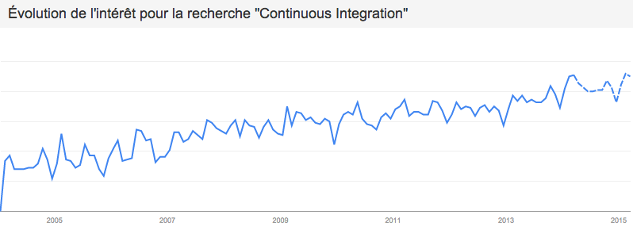

Les enjeux de l’intégration continue
By Maxime HORCHOLLE / Cédric TESNIERE
5ème année d'Architecture des Logiciels
Pourquoi ce sujet?
Parce que c'est l'avenir!
Google Tendances
C'est quoi l'intégration continue?
Tester en continu son application
Pourquoi faire?
Ecrire du code de qualité
Maintenable
Robuste
Evolutif
Sans Bug
Sans Bug
Avantages / Inconvénients
Les outils
Les tests automatisés
Le serveur de sources
Mess Detector
Copy/Paste Detector
Check Style
Le serveur d'intégration continue
Comment développer efficacement avec l'intégration continue?
Agilité!
- eXtremProgramming
- SCRUM
- Kan Ban
Test Driven Devloppement
Behaviour Driven Devloppement
Feature: ls
In order to see the directory structure
As a UNIX user
I need to be able to list the current directory's contents
Scenario:
Given I am in a directory "test"
And I have a file named "foo"
And I have a file named "bar"
When I run "ls"
Then I should get:
"""
bar
foo
"""
L'avenir
De l'intégration continue dans le cloud